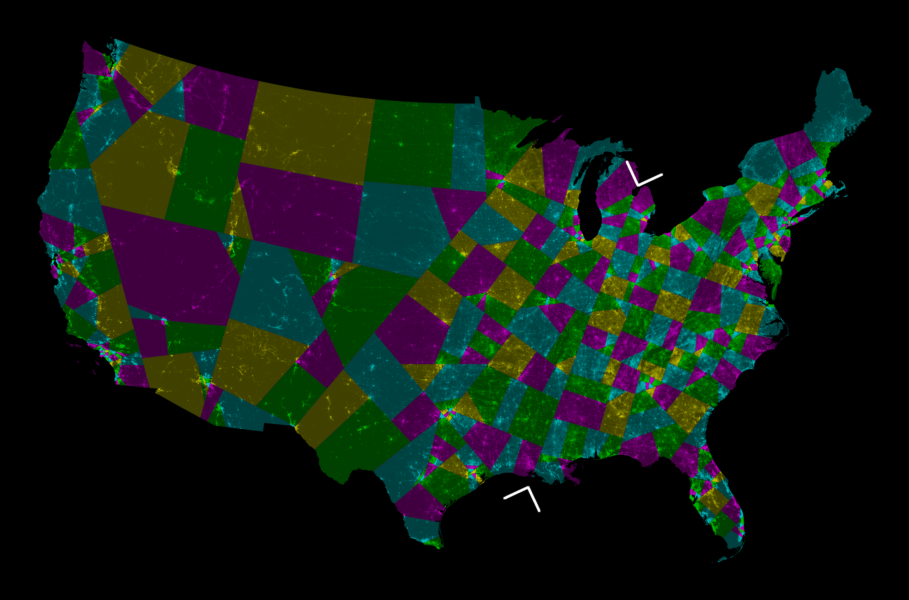
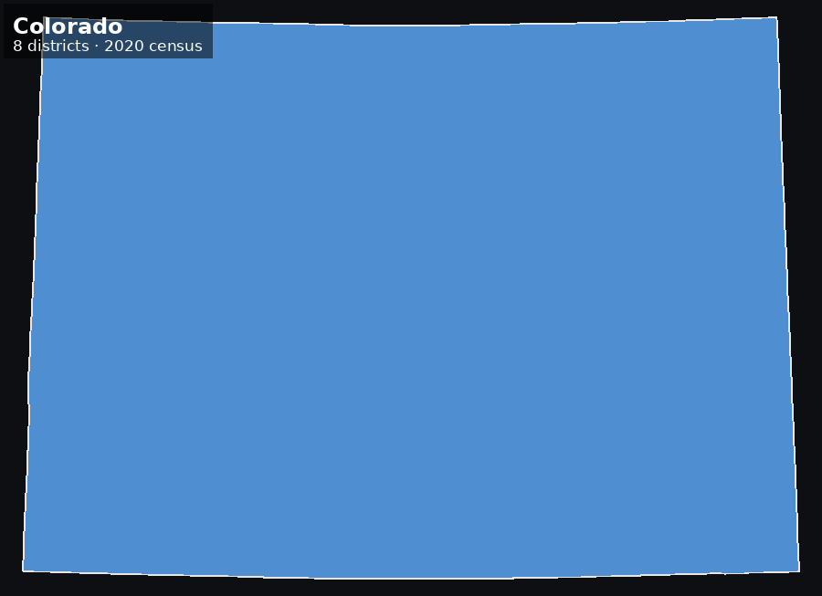
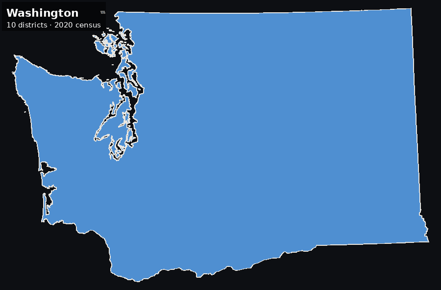
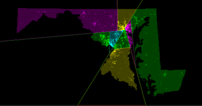
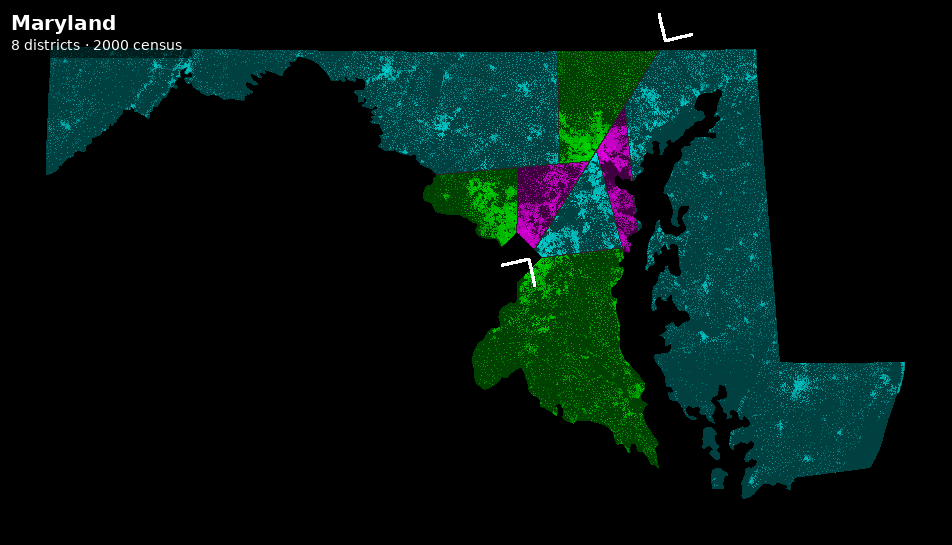
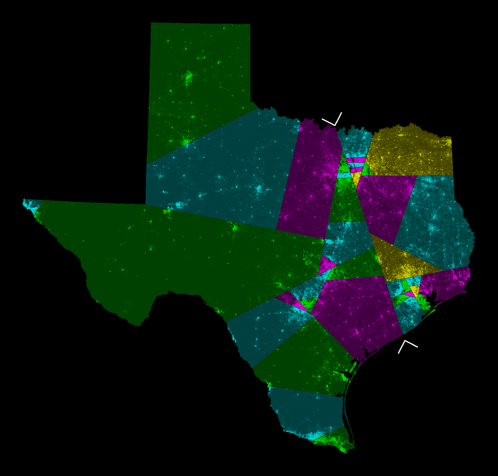
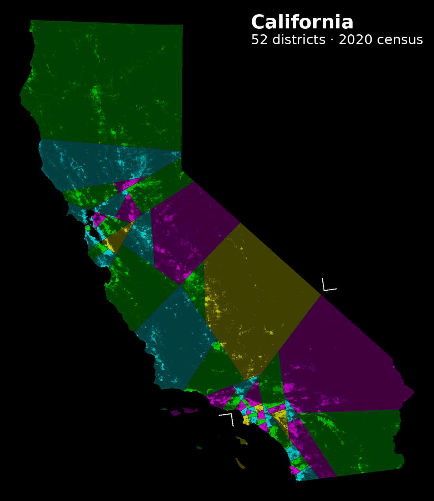

That said, AI is also a powerful tool, and this spare-time project — containing
thousands of maps at
just its first iteration — would never have been possible without it. Most of the content
here, including the code, is generated by Claude Code.
The maps
Eight million census blocks, cut by straight lines and nothing else.
The contiguous United States, 432 districts

2020 census. State lines ignored entirely — the country is cut as one region.
Alaska and Hawaii keep their own maps, so 435 − 3 = 432 districts here.
The first cut, marked by the two arrows, runs from Michigan to Louisiana. It immediately shows a line splitting the population in half.
One cut at a time
Every map is a binary tree of straight lines, so the whole thing can be replayed:

Colorado, 8 districts. One covers half the state.

Washington, 10 districts. Three of them cover 72% of the state.
Does it reproduce the original?
The Center for Range Voting published splitline maps from the 2000 census in 2009.
Rebuilding them from scratch is the test of whether any of this is right: same census, same
seat count, same algorithm, independently written code.

Center for Range Voting, 2009.

This project, rebuilt from the raw 2000 census blocks.
Overlaid, 99.6% of Maryland's land falls in the same district in both, and all eight
districts correspond one to one, each overlapping between 97% and 100% of its counterpart.
What disagreement is left is a single pixel wide and lies along the cut lines themselves —
two renderers rounding the same boundary to opposite sides of a pixel, rather than any
district actually being drawn differently.
A few states

Texas — mid-decade redrawn in 2025, and in court over it since.

California — half its districts sit in the Los Angeles and
Bay Area knots.